Enterprise UKIZA · Sales Development
An AI-researched SDR plan: what I learned about Tenable, the UK "why now", six real target accounts with one mapped in MEDDPICC, and my first 90 days.
1 · What I learned about Tenable
Q3 2026 shows customers moving from point scanning to the Tenable One exposure management platform, and Tenable leaning hard into agentic AI.
Sources: Tenable Q3 2026 results · Q3 2026 earnings call highlights
2 · What that means for an Enterprise SDR
Buyers can already count CVEs. The six-figure conversation is about which exposures across IT, cloud, identity and OT actually put the business at risk, and proving it to a board or regulator.
Tenable partnered with Anthropic in May 2026 to bring Claude-powered workflows into Hexa AI, and Q3 added an always-on fleet of AI agents. An SDR who uses AI well in their own research is speaking the same language as the product.
Management called Q3 a record for net new logos, with a high share landing straight on Tenable One. That is exactly the Enterprise UKIZA hunting brief.
Management flagged large endpoint vendors competing with aggressive bundling. Discovery should surface what "good enough" looks like to the buyer before the Territory Manager joins.
Sources: Tenable and Anthropic partnership, 20 May 2026 · Q3 2026 results · earnings call highlights
3 · The UK "why now"
The Bill extends the UK's NIS rules to organisations that were never regulated before. Each one needs to show it knows where it is exposed, and most have never bought an exposure platform.
A new regulated category: relevant managed service providers, overseen by the Information Commission.
Regulated as a category for the first time, with thresholds set in secondary legislation.
Suppliers whose failure would disrupt a regulated entity can be designated and given duties.
Up to £17m or 4% of global turnover for serious breaches, and up to £100,000 a day for ongoing non-compliance.
Timing: in the House of Lords in 2026, Royal Assent expected late 2026, main duties expected around 2028. That gives a 12 to 24 month buying window to get ahead of it.
Source: Lords Committee stage summary, Aug 2026 · Trowers & Hamlins analysis
4 · My research workflow
I use Claude and Gemini for the research and write the message myself. I built this workflow into PeachBox., the AI platform I founded, so I can show it rather than describe it.
Find the account's "why now": regulation, a new security leader, hiring for a vulnerability backlog, an incident, a cloud move.
Map the economic buyer, champion, technical evaluator and influencer by role.
Fill what the research can prove. Every gap becomes a discovery question.
One researched, specific first touch with a small ask. A human approves every send.
Meeting booked, notes attached, open questions listed for the Territory Manager.
48-second PeachBox. demo running these real accounts from public sources.
5 · Six real UKIZA target accounts
Two accounts per country, each with a public "why now" and a first-touch angle. Decision makers are listed by role only. Some may already be Tenable customers; that is a 30-second CRM check before any outreach.
| Account | Why now (public signal) | Entry point | First-touch angle |
|---|---|---|---|
| Pulsant UK | Data centre and managed IT provider: the Cyber Security and Resilience Bill regulates it twice. £10m high-density AI facility in Milton Keynes (Feb 2026). source | Head of Information Security | Rank exposure across client IT, cloud and site OT before the regulator asks |
| Jaguar Land Rover UK | The 2025 cyberattack halted production for weeks and cost the UK economy an estimated £1.9bn, the costliest cyber event in UK history. source | CISO, Head of OT / Plant Engineering | Continuous visibility of IT-to-OT attack paths across plants, and the same question for suppliers |
| Echelon Data Centres Ireland | €1.7bn Morgan Stanley financing (Feb 2026) to expand 8 campuses (1.2GW). NIS2 covers data centres; Ireland's bill is a priority after a July 2026 CJEU referral. source · source | Head of Security, CTO | Build exposure management in while the campuses are being built, not after |
| Uisce Éireann Ireland | National water utility: an essential sector under NIS2 and Ireland's new critical-entities resilience strategy (CER compliance due Oct 2026). Heavy OT estate. source | CISO, Head of OT Security | Tenable already works on water cyber resilience (Project Watershed in the US): bring that playbook to Ireland |
| Toyota South Africa Motors South Africa | Named among South African companies with a reported cyber incident in Aug to Sep 2026. Manufacturing plant and dealer network (IT and OT). source | Head of IT Security, Plant IT/OT lead | After an incident, the board asks "where else are we exposed?" One view across IT and OT answers it |
| Bidvest Bank South Africa | Named in the same reported incidents. 85% of SA ransomware victims link the breach to an identity compromise (Sophos 2026). source | CISO, Head of Identity | Identity exposure is the entry point in SA: show the attack paths from identities to crown-jewel systems |
6 · One account in depth
| Metrics | Time to fix critical exposures across hosting, cloud and site OT |
| Economic buyer | CEO or COO: the regulated entity carries client-contract risk |
| Decision criteria | One view across IT, cloud and data centre OT; audit-ready reporting for clients and regulator |
| Decision process | Unknown: ask on discovery |
| Paper process | Unknown: procurement threshold? |
| Identify pain | New sites widen the estate faster than the security team grows |
| Champion | Head of Information Security (confirm on discovery) |
| Competition | Unknown: current scanner or bundle? |
Why it works: a real compelling event, a visible change to their estate, and a small ask. No pricing, no product dump. Gaps in the map become discovery questions for the Territory Manager.
7 · My first 90 days
Tenable One, Hexa AI and the exposure story; shadow top SDRs and discovery calls; agree target account lists with each Territory Manager; build my research prompts and templates.
Run multi-touch sequences into the first greenfield accounts (MSPs, data centres, OT-heavy utilities and manufacturers); first meetings booked and handed over with full notes.
Full activity at target; share what is working with the EMEA team; feed messaging insights back to marketing and the Territory Managers.
Target segments for UKI greenfield: managed service providers and data centres (new under the Bill), water and energy (OT exposure), and mid-to-large enterprises moving workloads to the cloud.
8 · Why me
I founded PeachBox. and built its AI prospecting engine with Claude. I want to bring that research discipline, and plenty of grit, to the Enterprise UKIZA team.